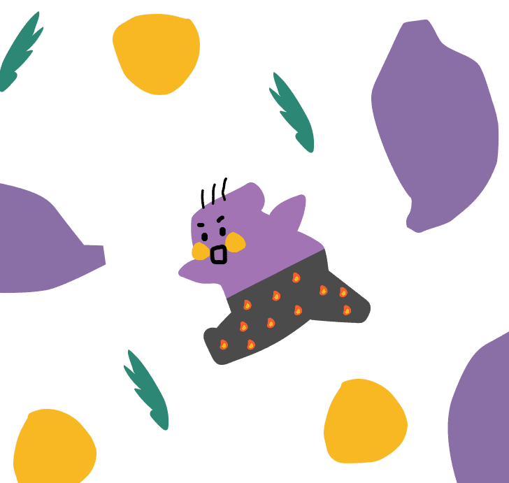

내일의 농활대
농촌의 이야기를 담아, 내일의 농활대
내일의농활대는 농활의 가치에 공감하는 대학생 팀입니다. 2020년 연세대학교 농활 팀에서 출발하여, 지금까지 다양한 구성원들이 함께 해왔습니다. 농촌사회는 여전히 많은 고민을 안고 있지만, 시대적 흐름 속에서 농촌과 농활에 대한 관심은 점차 줄어들고 있습니다. 더하여 코로나19의 전세계적인 확산으로 학생들은 농활을 갈 수조차 없는 상황을 겪고 있습니다. 이런 상황에서 내일의농활대는 농촌과의 새로운 방식의 연대를 모색해왔습니다. 농민의 고민에 공감하고, 그들의 문제 해결을 위해 함께 해온 과정을 이 공간에서 여러분들과 공유하려 합니다.
